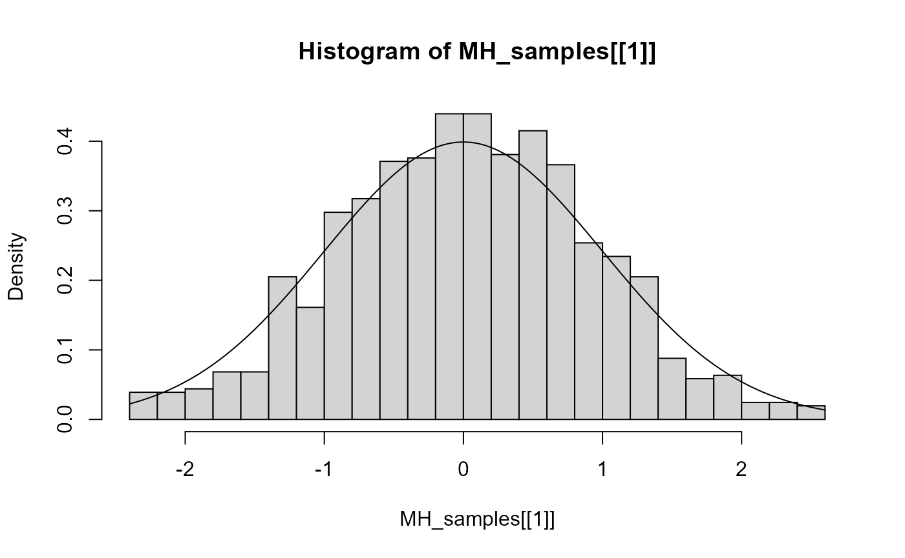
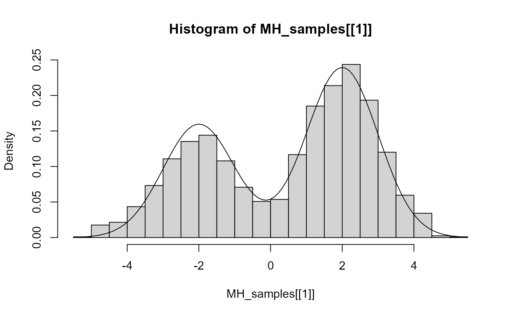

how-to-sample.RmdTo sample from a distribution, check the abbreviation, as well as the distribution parameters, in the Supported Distributions Vignette. Henceforth we sample from a Normal distribution with mean 0 and standard deviation 1. So, we need:
0.,"norm",mean and std, that is: c(0,1),
start = 0
name = "norm"
params = c(0,1)Different algorithms are available in the samplr package. For our example, we will use Metropolis Hastings. To use a sampler, we will always need the three previously mentioned items. For Metropolis Hastings and MC3, it is convenient to provide the variance of the proposal distribution, so we do that before sampling.
proposal_variance <- 1 / 2
MH_samples <- sampler_mh(start, name, params, proposal_variance)If we plot our results:

Notice that the same approach is used for all other samplers:
MC3_samples <- sampler_mc3(start, name, params, proposal_variance)
HMC_samples <- sampler_hmc(start, name, params)
NUTS_samples <- sampler_nuts(start, name, params)If we want to sample from a mixture distribution, the following change:
c("norm", "norm")
We’ll make a custom density function to plot the curve with our results (this is not necessary for the samplers to work)
We proceed as we did before:
# Sample (more iterations as MH struggles to change hills)
proposal_variance <- 1
MH_samples <- sampler_mh(start, name, params, proposal_variance, iterations = 2**12, weights = weights)
# plot
hist(MH_samples[[1]], freq=FALSE, breaks = 20)
curve(customDensity(x), add=TRUE)
See the Multivariate Mixtures Vignette for examples on how to mix multivariate distributions, as well as a comparison between the performance of different samplers in a ‘patchy’ environment.